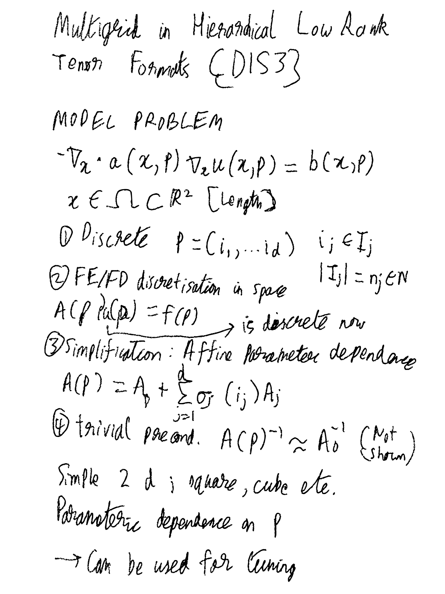
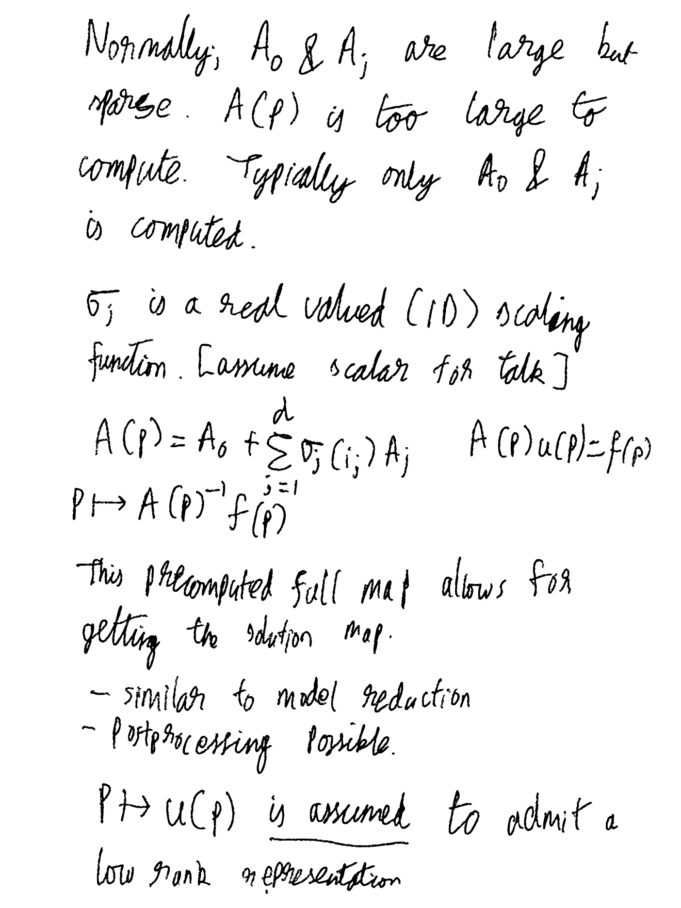
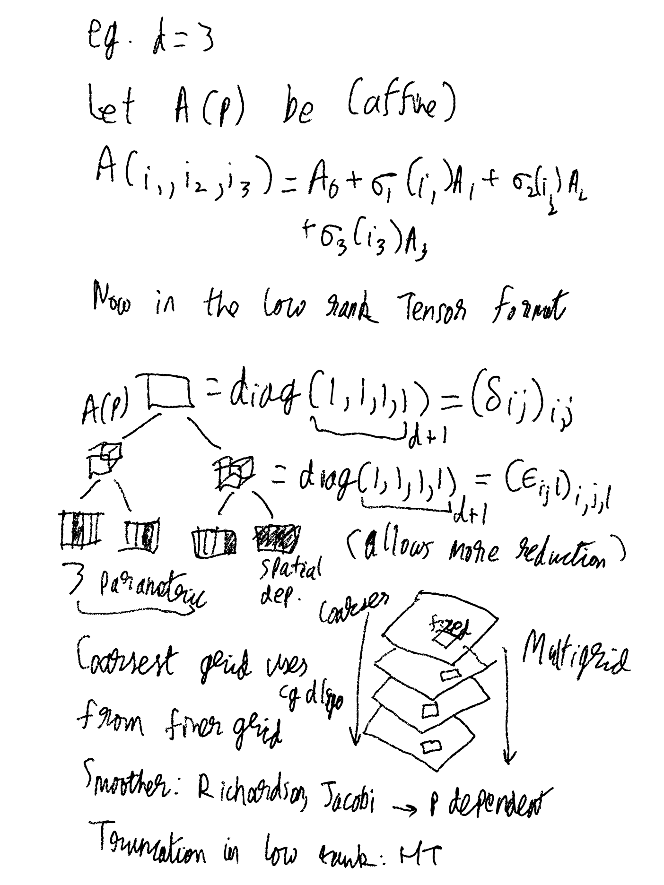
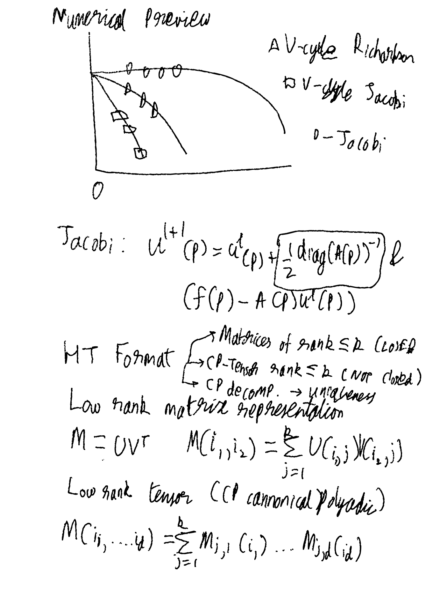
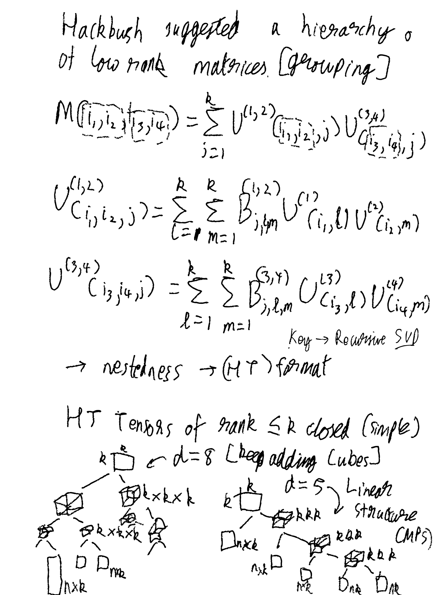
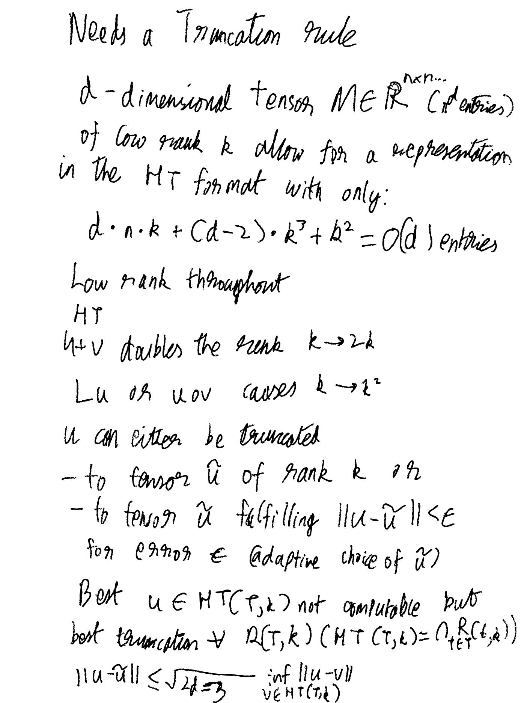
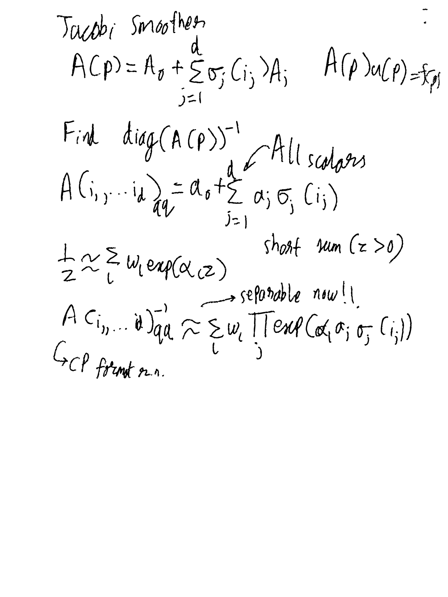

Multigrid in Hierarchical Low Rank Tensor Formats¶
RWTH Aachen University
In this presentation we give a brief introduction to hierarchial low rank tensor formats for the representation of high-dimensional tensors that fulfil certain rank bounds or singular value decay of corresponding matricizations.
In order to solve systems of equations in these formats there are already many developed and practically useful methods available. However, their convergence and convergence rates are difficult to analyse. On the other hand multigrid methods are well analysed with superior convergence rates. We use the classical multigrid convergence theory by providing a smoother and prolongations / restrictions that comply with low rank tensor formats. Prolongation and restriction are naturally given in a low rank tensor formulation. The smoother is an approximation of Jacobi based on a truncated exponential sum, thereby adapting it to the low rank format.
Notes¶
Note
These are essentially a rough sketch of the slides.
For model (and complex) problems the main goal is the ability to have a convergence guarantee.
Click to expand ugly scribbled transcript
      
Main results¶
Detailed in [GKLobbertW20] along with some earlier related results [GLobbert18,Gra10]
HT-approximability for inverse of diagonal matrix
Convergence proof (uniform) for multigrid (parameter \(p\))
Open Questions¶
Other smoothers
Algebraic Multigrid
Matrix (parameter \(p\)) dependent prolongation / restriction
Dimension \((d)\) reduction on coarse grids
References¶
- Gra10
Lars Grasedyck. Hierarchical Singular Value Decomposition of Tensors. SIAM Journal on Matrix Analysis and Applications, 31(4):2029–2054, 01 2010. URL: https://epubs.siam.org/doi/abs/10.1137/090764189 (visited on 2021-05-22), doi:10.1137/090764189.
- GKLobbertW20
Lars Grasedyck, Maren Klever, Christian Löbbert, and Tim A. Werthmann. A parameter-dependent smoother for the multigrid method. 08 2020. URL: http://arxiv.org/abs/2008.00927 (visited on 2021-05-22), arXiv:2008.00927.
- GLobbert18
Lars Grasedyck and Christian Löbbert. Distributed hierarchical SVD in the Hierarchical Tucker format. Numerical Linear Algebra with Applications, 25(6):e2174, 2018. URL: https://onlinelibrary.wiley.com/doi/abs/10.1002/nla.2174 (visited on 2021-05-22), doi:10.1002/nla.2174.